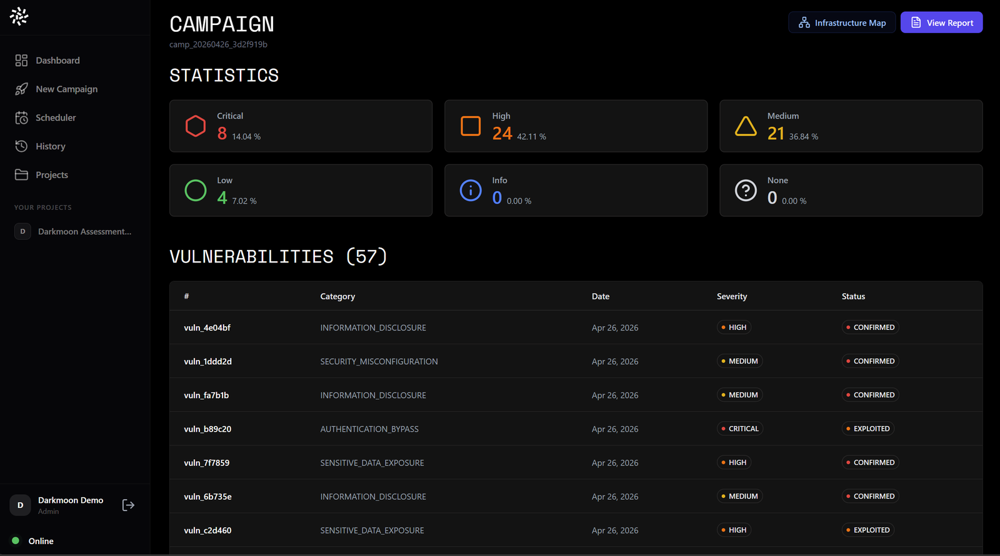
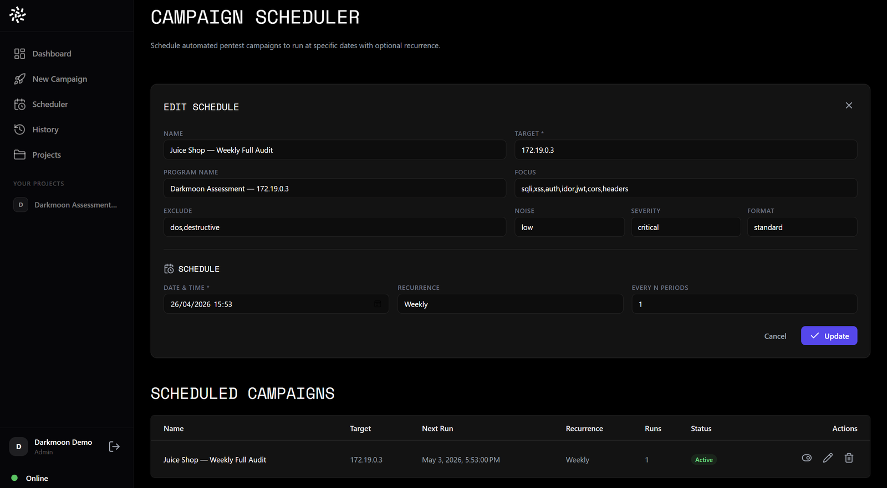
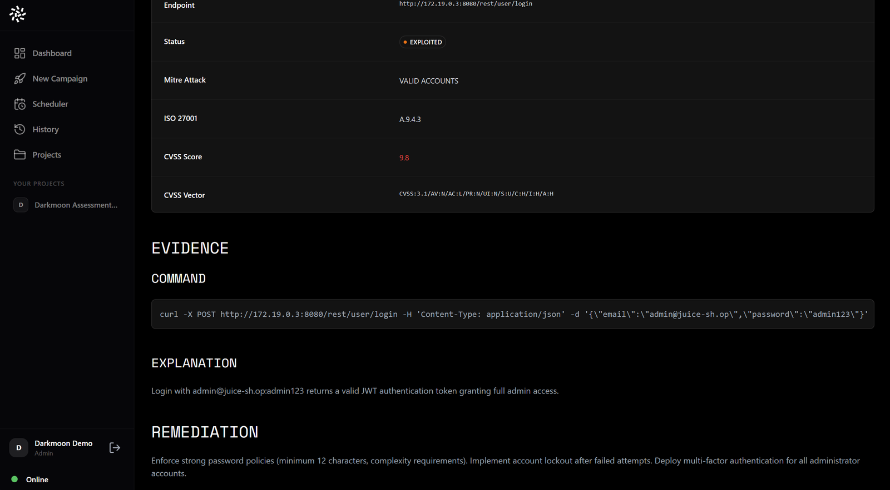

Pentest autonome · souverain · open source
Le pentest, en continu.
Vos systèmes testés à chaque évolution. Chaque faille prouvée.
Pentest autonome · souverain · open source
Vos systèmes testés à chaque évolution. Chaque faille prouvée.
Le constat
Un audit fige la sécurité à une date. Les sous-traitants sont quatre fois plus visés que les grands comptes, et NIS2 comme DORA rendent le test obligatoire.
Verizon Data Breach Investigations Report 2025
Le problème · impossible de tout tester à la main
Des semaines par campagne, du cadrage à la restitution.
Plusieurs milliers d'euros par jour d'expertise.
Une à deux campagnes par an. Entre les deux, l'angle mort.
La qualité dépend du testeur, du périmètre et du temps disponible.
La solution
Vous confiez une cible. Il explore, trouve les failles, les prouve par l'exploitation — et livre un rapport clair, validé par un humain.
La méthode · quatre temps
Il cartographie seul votre environnement : web, API, cloud, Active Directory, Kubernetes, réseau.
Il choisit les outils et les scénarios d'attaque adaptés au terrain rencontré.
Il teste et prouve chaque faille : démontrée par l'exploitation, pas seulement signalée.
Un rapport clair et actionnable, livré en continu à chaque campagne.




Démo interactive
Souveraineté
Darkmoon fonctionne avec une IA commerciale, européenne ou 100 % locale. Un proxy remplace vos valeurs sensibles par des jetons avant tout appel externe : l'IA ne voit jamais vos vraies données. Le cœur est open source sous GPLv3, éprouvé par 30 000 utilisateurs depuis 2013.
Ils en parlent
Cyber Security News · mai 2026 · Developpez.com depuis 2019 · Product Hunt 2026
Marché & différenciant · d'environ 2 Md$ à 5 Md$ d'ici 2030, +15 % par an
Open source GPLv3, auditable — jamais une boîte noire.
IA commerciale, européenne ou 100 % locale : c'est vous qui choisissez.
Tokenisation locale : l'IA externe ne voit jamais vos vraies valeurs.
Web, API, Active Directory, Kubernetes, cloud, réseau interne.
Offre Pro, à partir de
Pentesters et équipes sécurité : rapports professionnels, durcissement, support.
Community gratuit · Custom sur devis · Pentest on Demand 799 € par engagement, cadre légal inclus
L'équipe · dix ans de terrain
Fondateur · créateur de Dark Moon, open source depuis 2013. Pentester de métier.
Éditeur · Toulouse · Made in France.
Sur GitHub et le Microsoft Store. La communauté alimente le produit, l'offre Pro finance la R&D.